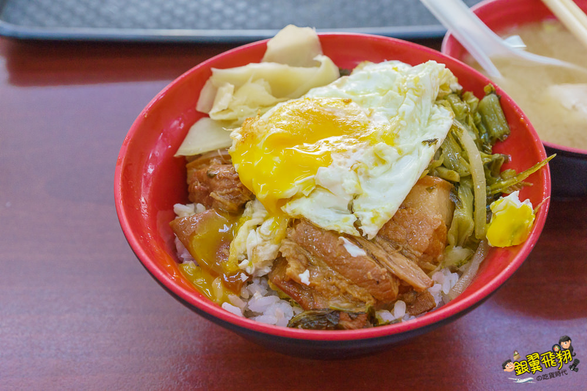

控肉飯
滷肉飯
火雞肉飯
豬腳飯
學期心得

華喜爌肉飯』不少在地人推薦的爌肉飯，雖然只有賣爌肉飯，但是用餐時間到可是人氣旺到不行，難怪是不少
網友激推連食尚玩家都有報導，單一風味搭配三種湯就夯成這樣，
當天非用餐時間內用幾乎不太用排隊，不過還是可以看到外帶的人似乎還頗多的
，
所以真的是人氣很旺不是沒有原因，至於是什麼樣的魅力就跟著銀翼來去吃古早味吧！
不論內用還是外帶都要排隊，不過是分開排隊，當天十點多到內用幾乎不用排隊，
就可以準備大快朵頤。老闆很熟練的直接問幾份、
肉可以挑選肥、中、瘦，還可以選燉比較久軟，
搭配酸菜、半熟蛋、嫩薑。當天挑中的爌肉飯，爌肉選用半肥半瘦可以吃到瘦肉也可以吃到油滋滋的肥肉，
不同於彰化的爌肉飯，有搭配酸菜、半熟蛋、嫩薑，
我只能說酸菜與嫩薑頗搭淋過肉汁的白飯，
尤其是酸菜與爌肉的在嘴裡產生很微妙的口感，嫩薑也可以適時的解膩，吃到一半就想要扒飯的衝動。
記得半熟蛋要戳破在與白飯攪拌一起食用更佳的美味。